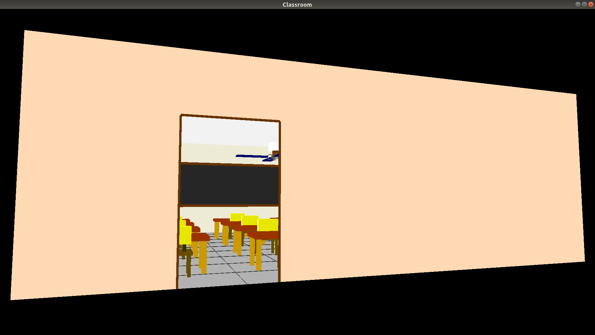
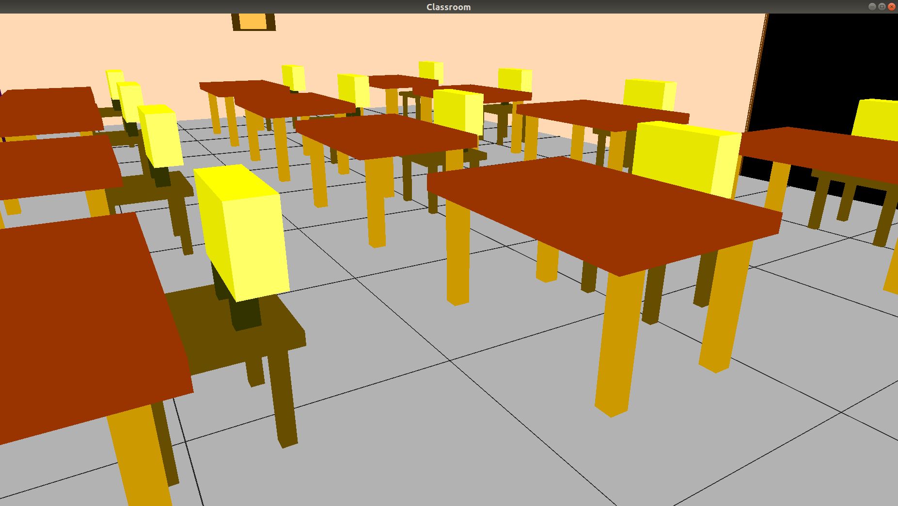
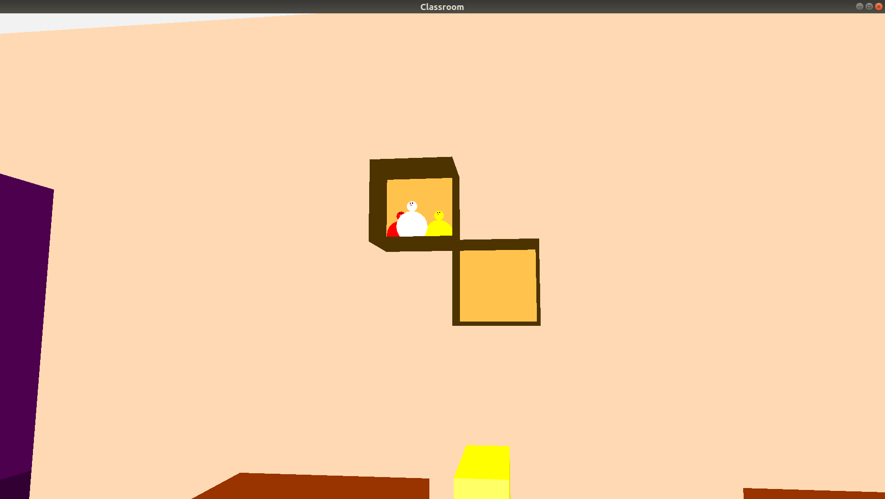
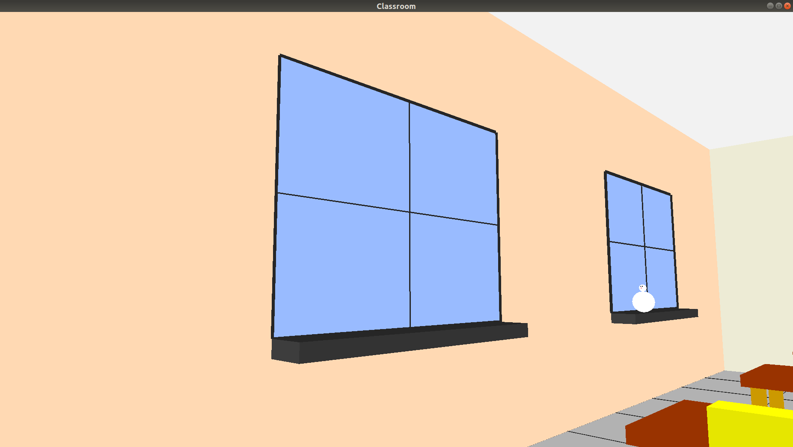
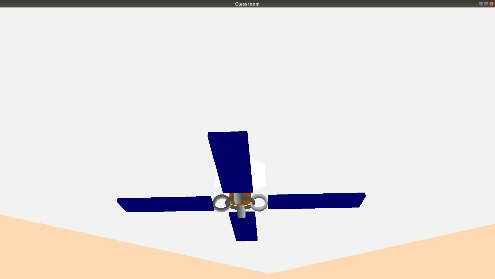
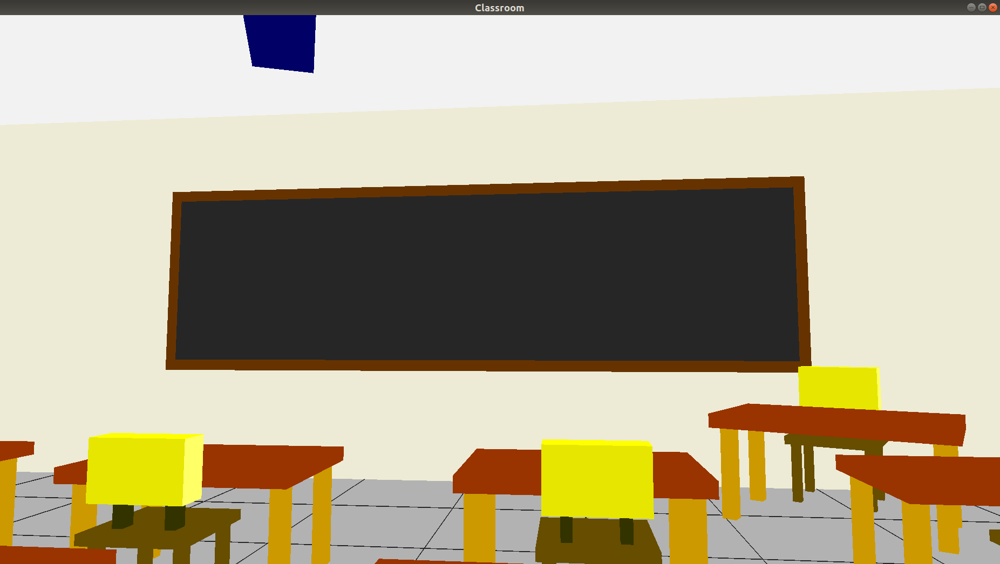
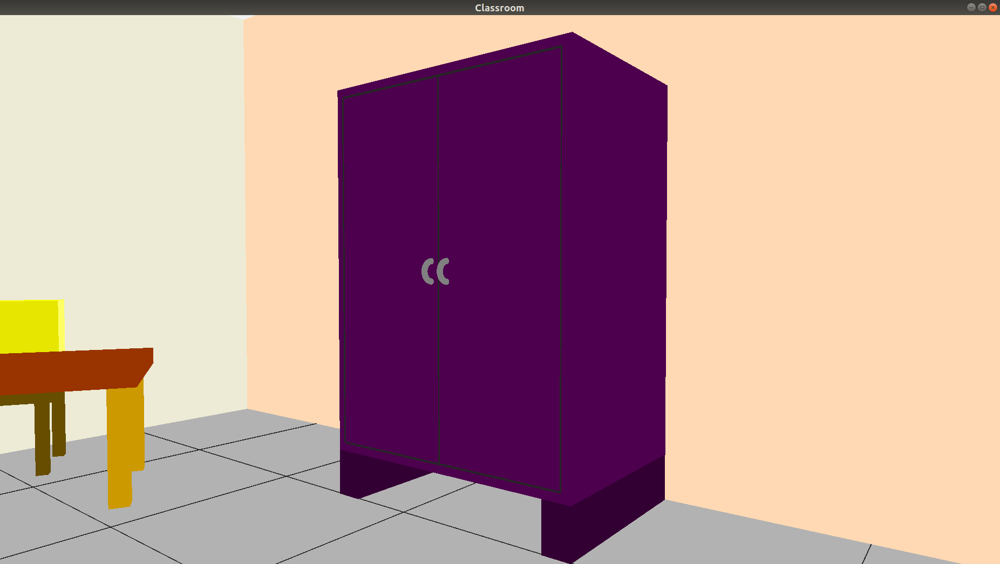
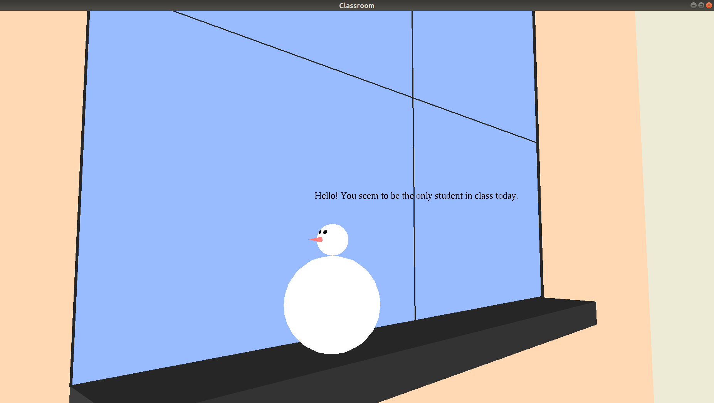

Video
Images
       {kind=link}
{kind=link}
{kind=link}
{kind=link}
{kind=link}
{kind=link}
{kind=link}
{kind=link}
Header Files
The following header files are used to define the various objects inside the classroom. Various OpenGL functions like glBegin(GL_QUADS), glVertex3f(), glTranslatef(), glScalef(), glRotatef(), glColor3f() have been used to create the objects.
chair.h
- This header file contains a class with the method necessary to draw a chair object
cupboard.h
- This header file contains a class with the method necessary to draw a cupboard
fan.h
- This header file contains a class with the method necessary to draw a fan and animate it by changing the angle of rotation.
shelf.h
- This header file contains a class with the method necessary to draw a shelf and the items placed inside it.
snowman.h
- This header file contains a class with the method necessary to draw a snowman.
table.h
- Contains a class with methods used to draw a table.
window.h
- Used to draw window and window sill.
Main Scene
Class room scene description
Along with OpenGL, the library GLUT was used to create the window and set the projection and configure the camera.
GLUT handles the 3D pipelining which consists of normalizing, clipping, projection( perspective ) and transformation
to viewport coordinates.
classroom.cpp creates the 3D scene. It makes use of the different header files to add the objects to the 3D scene by applying
translation, rotation and scaling.
It also defines the callback functions to handle the keyboard and mouse events. These events trigger the movement and
rotation of the camera. Thus, providing a first-person experience of the 3D classroom.
The camera actions that have been implemented using mouse and keyboard (z and x for roll) are: Yaw, Pitch and Roll.
Also, Zoom and Pan have been implemented using the w, a, s, d keys.
// angle of rotation for the camera direction
float angle = 0.0, yAngle = 0.0;
// actual vector representing the camera's direction
float lx = 0.0f, ly = 0.0f, lz = -1.0f;
// XZ position of the camera
float x = 0.0f, z = 5.0f;
//for mouse movements
float halfWidth = (float)(WINDOW_WIDTH/2.0);
float halfHeight = (float)(WINDOW_HEIGHT/2.0);
float mouseX = 0.0f, mouseY = 0.0f;
//Fan object
Fan f;
//makes a sentence appear above thesnowman when the camera approaches it.
void interactWithSnowman(){}
// Callback function that is called after every frame refresh. Creates all the objects in the scene.
void renderScene(void) {}
// Handles the events triggered when one of the arrow keys are pressed.
// @param key : key pressed
// @param xx : x coordinate of mouse position
// @param yy : y coordinate of mouse position
void processSpecialKeys(int key, int xx, int yy) {}
// Handles the events triggered when any key on the keyboard is pressed.
Specifically, handles w,a,s,d and Esc.
// moves the camera frward, backward and sideways.
// @param key : key pressed
// @param xx : x coordinate of mouse position
// @param yy : y coordinate of mouse position
void processNormalKeys(unsigned char key, int xx, int yy) {}
// Handles the events triggered when the mouse is moved in the window area.
// Handles yaw and pitch of the camera.
// @param xx : x coordinate of mouse position
// @param yy : y coordinate of mouse position
void processMouseMovement(int xx, int yy){}
// Adjusts the viewport sie when the window size is changed and sets the projection.
// @param w : new width of window
// @param h : new height of window
void changeSize(int w, int h) {}
// Used to rotate the fan by increasing its angle of rotation.
void animate () {}
int main(int argc, char **argv) {
// init GLUT and create window
glutInit(&argc, argv);
glutInitDisplayMode(GLUT_DEPTH | GLUT_DOUBLE | GLUT_RGBA);
glutInitWindowPosition(0, 0);
glutInitWindowSize(WINDOW_WIDTH, WINDOW_HEIGHT);
glutCreateWindow("Classroom");
// register callbacks
glutDisplayFunc(renderScene);
glutReshapeFunc(changeSize);
glutIdleFunc(animate);
glutKeyboardFunc(processNormalKeys);
glutSpecialFunc(processSpecialKeys);
glutPassiveMotionFunc(processMouseMovement);
// OpenGL init
glEnable(GL_DEPTH_TEST);
// enter GLUT event processing cycle
glutMainLoop();
return 0;
}